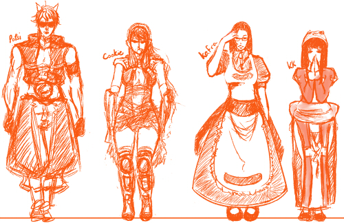

Portfolio
My Portfolio Item
« Back to Portfolio - Artwork
How it Was Made
 'I don't know what you mean,' said Alice. 'Of course you don't!' the Hatter said, tossing his head contemptuously. 'I dare say you never even spoke to Time!' 'Perhaps not,' Alice cautiously replied: 'but I know I have to beat time when I learn music.' 'Ah! that accounts for it,' said the Hatter. 'He won't stand beating. Now, if you only kept on good terms with him, he'd do almost anything you liked with the clock. For instance, suppose it were nine o'clock in the morning, just time to begin lessons: you'd only have to whisper a hint to Time, and round goes the clock in a twinkling! Half-past one, time for dinner!' ('I only wish it was,' the March Hare said to itself in a whisper.) 'That would be grand, certainly,' said Alice thoughtfully: 'but then—I shouldn't be hungry for it, you know.'
Subtitle
'I don't know what you mean,' said Alice. 'Of course you don't!' the Hatter said, tossing his head contemptuously. 'I dare say you never even spoke to Time!' 'Perhaps not,' Alice cautiously replied: 'but I know I have to beat time when I learn music.' 'Ah! that accounts for it,' said the Hatter. 'He won't stand beating. Now, if you only kept on good terms with him, he'd do almost anything you liked with the clock. For instance, suppose it were nine o'clock in the morning, just time to begin lessons: you'd only have to whisper a hint to Time, and round goes the clock in a twinkling! Half-past one, time for dinner!' ('I only wish it was,' the March Hare said to itself in a whisper.) 'That would be grand, certainly,' said Alice thoughtfully: 'but then—I shouldn't be hungry for it, you know.'
Subtitle
'I don't know what you mean,' said Alice. 'Of course you don't!' the Hatter said, tossing his head contemptuously. 'I dare say you never even spoke to Time!' 'Perhaps not,' Alice cautiously replied: 'but I know I have to beat time when I learn music.' 'Ah! that accounts for it,' said the Hatter. 'He won't stand beating. Now, if you only kept on good terms with him, he'd do almost anything you liked with the clock. For instance, suppose it were nine o'clock in the morning, just time to begin lessons: you'd only have to whisper a hint to Time, and round goes the clock in a twinkling! Half-past one, time for dinner!' ('I only wish it was,' the March Hare said to itself in a whisper.) 'That would be grand, certainly,' said Alice thoughtfully: 'but then—I shouldn't be hungry for it, you know.'